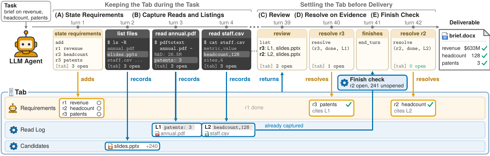

01研究背景与问题定义
根据多份文件编写报告时，代理可能早已读到员工数、专利数等关键信息，最终文档却仍漏掉这些内容。RunningTab 关注的是文件已经发现、内容已经展示之后，信息仍未落实到交付物的问题。
文件可访问，信息仍可能在交付前丢失
代理可以用终端直接搜索和读取原始文件，但任务要求与读取结果通常留在不断增长的交互历史中。早期输出被清理、截断或难以定位后，模型写作时就可能忘记曾经读到的数字，也可能忽略已经列出、尚未打开的文件。
| 断点 | 具体表现 | 缺少的能力 |
|---|---|---|
| 已发现，未读取 | 相关路径出现在搜索或目录结果中，之后没有继续打开 | 持续保留未探索的线索 |
| 已读取，未交付 | 所需内容已展示给模型，最终报告仍遗漏或失真 | 让旧证据可找回，并与尚未完成的要求保持关联 |
原论文图 1 用一份营收、员工数和专利数简报说明这一过程：三个事实先后被读到，最后只交付了最近看到的营收。继续扩大搜索，无法单独补上这段“已经读到、后来没有使用”的缺口。
一种直观的补救是让模型边读边记笔记，但记哪些内容、后续是否回查，仍由模型自行决定，关键细节可能在记笔记时就被漏掉。RunningTab 因而将读取记录的保存交给环境程序，自动保留实际展示过的内容。
展开图 1｜读到三个事实，为什么最后只交付一个
原论文的说明性任务，非实际运行轨迹。左侧展示信息随交互推进失去可访问性，右侧展示增加环境账本后的预期流程。
关键证据：已经展示的信息，仍有相当一部分没有交付
在 Workspace-Bench 的 DCI + GPT-5.4 nano 轨迹中，作者发现：约五分之一（19.8%）已经展示给代理的目标数值，最终仍未进入交付物，并导致相关要求不满足。这说明问题不仅发生在找文件阶段，读取之后的信息保留与使用也值得单独处理。
这项诊断支持增加持续任务记录的必要性，但不能把所有遗漏都归因于上下文遗忘。误读、提取失真和写作错误也可能导致损失，保留日志本身无法保证修好这些问题。
核心切入：让要求和已读证据持续对应
RunningTab 在执行环境中增加一份任务级账本：保存模型登记的要求、工具展示过的原文及出处，以及已列出但未读的文件。复核时，再按要求找回相关记录，让模型知道还欠什么、已经有哪些证据可用。
改变的是记录由谁维护、证据如何重新访问。程序自动保留读取历史，同一个执行 LLM 负责理解、提取和写作；最后再通过引用结清与一次停止提醒促使模型补漏。它改善过程的可追踪性，最终是否正确写入交付物仍由模型承担。
02方法与技术路线
同一个执行 LLM 照常操作文件，环境程序在工具返回时持续记账。账本包含要求 R、读取日志 L 和未读候选 C，保存在上下文窗口与用户工作区之外；复核按需返回相关记录，而非每轮重新塞入全部历史。
窄屏可横向查看箭头关系，或点击“放大查看”。
运行中：执行循环与自动记账
放大查看 ↗实线：模型调用、工具返回绿色虚线：环境自动捕获
复核与收尾：证据回流、结清和补漏
放大查看 ↗展开图 3｜原论文的账本写入与结清时序

登记要求：明确后续需要逐项检查什么
系统提示要求 LLM 开始时调用 add，将任务拆成具体的事实、数字或交付元素。环境为每项分配编号，初始状态设为 open，后续持续保存。例如总数、分类明细、同比变化需要分别追踪，便于发现其中哪一项仍未处理。
要求来自模型对用户任务的理解，环境不会自动生成一份完整评分清单。模型最初漏拆的项也不会因为日志充足而自动出现；何时登记和复核由提示引导，是否及时执行仍依赖模型。
捕获观察：保存读取原文，保留未读线索
每次工具返回后，环境结合命令与观察，区分哪些文件展示了正文、哪些只出现了路径，再分别更新读取日志和未读候选。一次调用可能同时包含两者，因此文件名出现本身不足以判定已读。这一步由程序触发，无需额外 LLM 挑选值得保留的事实。
| 识别到的事件 | 环境保存或更新什么 | 后续用途 |
|---|---|---|
| 文件内容被展示 | L：实际展示的原文，加文件路径、产生内容的命令和日志编号；将该文件移出 C | 用 show 按编号回查；结清要求时引用这条读取记录 |
| 文件只有路径被列出 | C：尚未打开的文件路径；按路径相对任务的 BM25 相关性排序 | 提示有哪些已发现的材料还可继续读 |
保存的单位是实际展示的文本，不是自动提取出的事实。员工数即使夹在很长的年报输出中，环境也保留这段原文及出处，供之后按编号取回。这样减少了选择性摘录造成的遗漏，代价是日志本身可能仍很长。
- 观察覆盖：已读只表示内容展示给模型，不表示已理解或读完整份文件；未展示、被截断的部分不会自动补入日志。
- 识别边界：论文给出依据命令与观察区分读取和列举的原则，但未充分展开复杂命令下的识别算法，不能推断所有对应关系都无误。
检索复核：从任务要求定位到旧记录
保存历史之后，还需要让模型在写作时重新找到它。环境在每条观察末尾附上未结清要求、日志与候选数量等简短状态；探索后，模型调用 list(kind=requirements)，程序以每项 open 要求为查询，用 BM25 排序读取记录和未读候选。
复核返回日志编号、路径和首条与要求共享词项的原文行，以及相关未读路径。它提供的是检索线索，模型再沿着线索回查原文、提取目标事实。
| 操作 | 实际返回或完成的内容 | 仍需谁来处理 |
|---|---|---|
| list：按要求找线索 | 相关日志编号、出处、首条共享词行；相关未读路径 | LLM 判断哪些记录值得继续查看 |
| show：按编号回查 | 某条日志最初保存的展示文本与出处；文本可能仍然很长 | LLM 查找目标事实，必要时再用原有文件工具缩小读取范围 |
| 使用证据、生成交付物 | 从原文提取数字、比较口径、计算或撰写 | 同一个 LLM 执行；环境不替它完成这些语义工作 |
共享词行可能只是“员工管理制度”，未必包含员工总数，词汇相近也不保证年份和口径一致。BM25 负责定位，show 负责取回记录，精确查找和事实提取仍由 LLM 完成。Review 是程序组织的视图，不是另一个独立的审查 agent。
说明性示例｜员工数夹在长年报中，如何从记录走到交付
依据论文机制构造，非论文原始日志或实际序列化格式。文件名、文本与调用仅用于说明；省略号表示此处为便于展示缩短文本，日志机制本身不做这份摘要。
登记要求与读取
LLM 登记 r2：“填写 2024 年员工总数”，随后提取年报文本。环境保存 L2，绑定年报路径与读取命令。
L2 留下的是一段原文
公司概况……
员工管理制度……
截至 2024 年末，公司共有员工 128 人。
薪酬与福利……
Review 找到记录，show 取回内容
复核可能先给出 L2 的“员工管理制度”一行。LLM 据此查看 L2，再从保存的年报内容中找到年份和总数。
LLM 写入，程序记录结清
LLM 将 128 人写进简报，再以 L2 引用结清 r2。程序检查引用关系；它没有自动打开简报确认数字是否真的写对。
引用结清：让完成声明对应一条来源记录
文件打开后，要求不会自动变成 done。提示要求模型完成对应交付内容后调用 resolve：找到直接来源时引用读取日志，没有直接来源时说明理由。环境按下列规则接受或拒绝提交，再更新状态。
| 提交方式或问题 | 程序规则 | 状态结果 |
|---|---|---|
| done＋有效读取日志引用 | 要求与引用有效，来源不是输出目录自证；路径和摘录不能与要求完全没有词汇交集 | 通过后记为 done，并保留引用 |
| 未知引用、未读来源、输出自证或完全无词汇关联 | 拒绝这次提交，返回相应原因 | 该项保持 open，模型需另找来源或说明理由 |
| unavailable＋理由 | 理由不能为空；可说明需要计算、由模型撰写，或工作区没有来源 | 记录为 unavailable，并保存理由 |
done 通过的是来源引用检查，不能证明材料真正支持结论，也不能证明数字已正确写入最终文档。unavailable 则记录没有直接文件来源的理由；computed、authored 仍要求模型完成计算或撰写，不代表用户需求免除。
结清可追溯，交付仍需验收。账本区分“读过文件”与“声称这项要求已有来源”，但没有自动检查最终文档的语义正确性。
停止检查：提供一次显式补漏机会
代理首次不发工具调用、尝试结束时，环境根据账本状态返回收尾提示：
- 未登记要求：提醒补登记，再检查来源和交付物。
- 仍有 open 项：列出未结清要求，提示补做。
- 全部结清：提醒确认相应内容是否真的写入交付物。
提示同时提供未读线索与日志入口，后续仍由同一个 LLM 决定是否补读、回查或修改。检查最多发送一次，不会持续拦截结束直到全部真实需求满足；它增加补救机会，没有引入独立模型验收。
03实验设计与结果分析
实验在相同 DCI-Agent-Lite / Pi 框架中分别比较三种底座，统一使用 300 turns、每任务一小时上限，报告三次运行均值。原生 level 3 上下文管理会截断新观察，并随历史增长清理旧观察，这也是持久读取记录发挥作用的具体条件。
端到端收益：完整系统是否改善交付
| 底座 | Workspace 细则通过率 | 公司任务 Score | OfficeQA Acc@0% |
|---|---|---|---|
| GPT-5.4 nano | 41.63 → 44.73 | 32.09 → 39.12 | 53.53 → 60.58 |
| DeepSeek V4 Flash | 53.28 → 59.99 | 37.47 → 43.11 | 65.71 → 68.59 |
| Gemini 3.8 Flash | 31.42 → 46.91 | 26.35 → 32.93 | 43.08 → 55.77 |
多文件交付、公司文件任务和档案问答均有改善。待办提示、Self-Refine 与 Self-Tracking 对照仍弱于完整系统，说明收益超过单纯列清单或结束提醒；但证据访问与状态工具同时加入，不能把全部效果归给某一条捕获规则。
指标需要分别理解：Workspace 的细则通过率衡量 100 个任务、1,850 条细则的覆盖，TCR@70 是至少满足 70% 细则的任务比例；公司 Score 含部分检查点与全成功奖励，OfficeQA 衡量数值答案准确率，不能统一称为任务成功率。
组件消融：保存记录之后，重新呈现同样重要
| 配置 | 细则通过率 | TCR@70 |
|---|---|---|
| 完整 RunningTab | 44.73 | 25.67 |
| 移除环境捕获及依赖它的机制 | 41.36 | 22.33 |
| 移除要求复核 | 41.87 | 20.33 |
| 移除引用检查 | 42.89 | 24.33 |
| 移除结束检查 | 42.89 | 23.00 |
| DCI | 41.63 | 20.67 |
- 移除环境捕获：细则通过率回到 DCI 附近。但该消融同时移除了依赖记录的复核和证据检查，3.37 个百分点不能全归于原样存储。
- 移除要求复核：TCR@70 降得更多，说明除了把材料保存下来，按要求重新呈现也影响交付完整性。
定向恢复：保存下来，不等于已经用回来
作者进一步检查已展示、最终遗漏且导致细则失败的数字，分别测量日志保存覆盖和后续恢复能力。后者只针对日志已经保留的数字，测试同一个底座能否重新找回。
GPT-5.4 nano 的日志保存了 94.8% 的这类数字。事后给模型任务和遮住目标数值的要求，无账本时恢复 8.4%，通过 review 加所选记录恢复 45.8%，提供完整日志恢复 78.1%。这支持原文留存的价值，也暴露有限检索和精确提取仍会损失信息。
该测试不代表在线交付物已经修复，也不是端到端成功率。它区分了三件事：信息有没有保存、能否重新找回、最终是否完成交付。
开销边界：相同预算上限不等于相同实际成本
论文支持以额外记录和复核改善交付，但未同时报告完整 token、延迟和账本存储成本。轮次与时间上限一致，仍不足以判断实际开销相同，或总费用是否下降。
04贡献、局限与综合评价
核心贡献：把任务记录从临时上下文变成可回查状态
论文把“找到文件、看到证据、满足要求”分开追踪，并由环境维护连接这些事件的记录。旧内容不再只依赖当前上下文存活，模型可以按未完成要求重新访问证据；主结果、消融与定向恢复共同支持这套分工的实用性。
可迁移的思想是让程序持续保留它能观察到的工作记录，再为模型提供有目标的回查入口。它可以服务不同底座和文件类型，效果仍取决于观察捕获、词汇匹配及模型后续使用证据的能力。
关键局限：形式结清可能偏离真实完成
- 要求可能漏拆：最初没有登记的条目，不会因日志充足而自动出现。
- 来源可能不足：有效引用未必支持最终结论，done 也可能对应未满足的交付要求。
- 缺失可能误判：unavailable 可能被用于实际有来源的内容。
更强的质量保证需要将交付物按要求盲审，再与账本状态对齐，区分漏登记、错误 done 和错误 unavailable。若只是记录更多而误结清率未降，结论应限定为访问与提醒改善；误结清同步下降，才进一步支持交付状态变得可靠。这是进一步验证的建议。
综合判断：减少遗漏的基础设施，仍需模型正确使用
工具只展示了一部分，日志也只能保留这一部分；记录存在，模型也未必能准确找到并写入。RunningTab 的价值是在这些约束下减少信息丢失，改善交付表现。持久记录、按要求访问、精确提取和最终验收，是需要分别处理的几个环节。